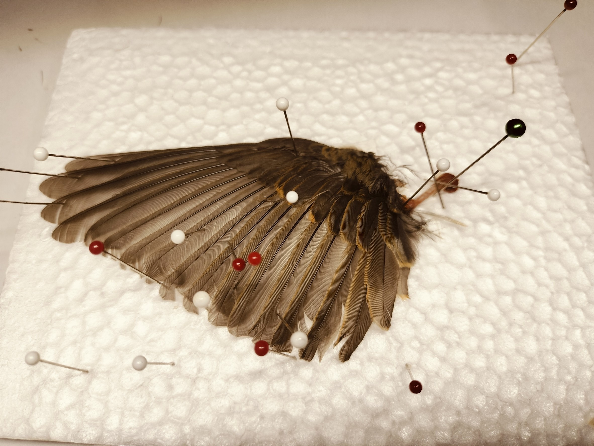

| 西暦 | 出来事 |
|---|---|
| 2003年9月 | 静岡県御殿場市に生まれる |
| 2010年4月 | 小田原市立富士見小学校へ入学 |
| 2016年3月 | 小田原市富士見小学校を卒業 |
| 2016年4月 | 私立横浜雙葉中学校へ入学 |
| 2019年3月 | 私立横浜雙葉中学校を卒業 |
| 2019年4月 | 私立横浜雙葉高等学校へ入学 |
| 2022年3月 | 私立横浜雙葉高等学校を卒業 |
| 2022年4月 | 早稲田大学人間科学部情報科学科へ入学 |
私は大学時代、営業のインターンに力を入れてきました。30名のインターン生の中で1年間営業成績1位になり続けています。
ゼロワンインターンより引用インターン生募集のサイトに私の姿が写っています
趣味は野鳥観察です。観察中に拾った鳥を標本にすることもあります。
